| Phase change | Value |
|---|---|
| Vaporization | 2501 \(kJ kg^{-1}\) |
| Fusion | 334 \(kJ kg^{-1}\) |
| Sublimation | 2835 \(kJ kg^{-1}\) |
Energy
The ability to do work
Learning Objectives
- Understand which forms of energy are important for driving the climate system.
- Explain the difference between heat and temperature.
- Describe the mechanisms by which energy is transported.
- Understand how we account for energy and mass conversions in the atmosphere.
iClicker
We’ll try using I clicker today:
- Use the join code: PXPZ
- Or follow this link: https://join.iclicker.com/PXPZ
If these options don’t work, go to:
- student.iclicker.com
- Then search for Atmospheric Environments
Which forms of energy are important in the atmosphere?
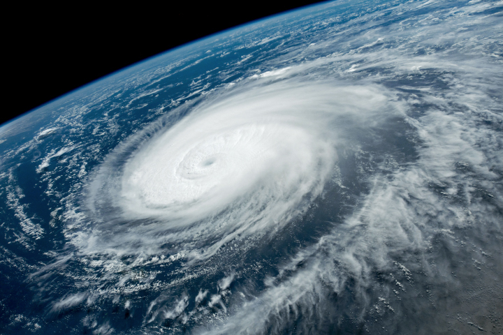Test Poll
I am able to join and answer:
A - Yes
B - No
Forms of energy in the atmosphere
- Radiation: electromagnetic waves (e.g., sunlight)
- Sensible heat: thermal energy we can feel (e.g., warm air, cold ice)
- Latent heat: phase changes of a water (e.g., evaporation, condensation)
- Chemical energy: bonds of atoms (e.g., photosynthesis)
- Kinetic: from motion (e.g., winds)
- Geopotential: position in gravitational field
Heat vs. Temperature
Heat is energy. Total thermal energy content of a body.
- Sum of kinetic and potential energy
Temperature a (relative) measure of thermal energy.
- Average random kinetic energy
- The ability of a body to transfer thermal energy
Heat vs. Temperature
Heat is energy. Total thermal energy content of a body.
- Travels from hotter to colder objects
- Can do work
- Often expressed in Joules (J)
- J = 1 N x 1 m
- Newton (N) = 1 kg m s-2
Temperature a (relative) measure of thermal energy.
- Increases/decreases when heat is added/removed
- Cannot do work
Temperature scales compared
Several scales have been invented:
Fahrenheit, Celsius, Kelvin…
According to the SI system
- We should use Kelvin (K)
- or Celsius (°C)
- For absolute temperatures only
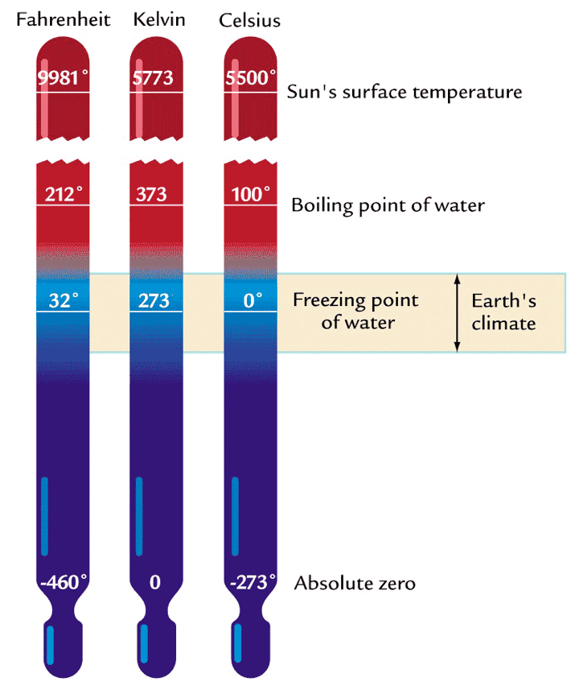
Three States of Water
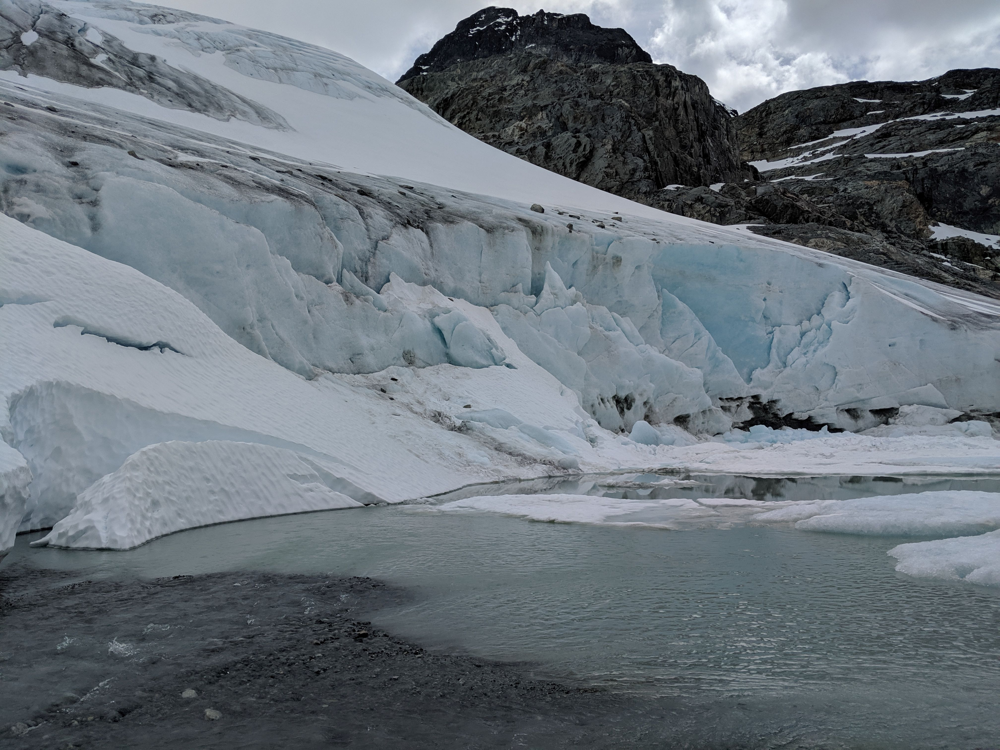States of Water (iClicker)
Which of the following are not states of water?
- A: Ice
- B: Liquid
- C: Vapor (gas)
- D: Air
State changes of water
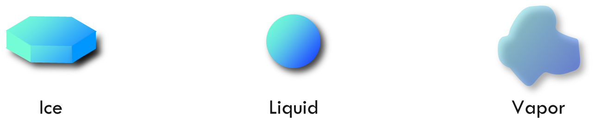
State changes of water
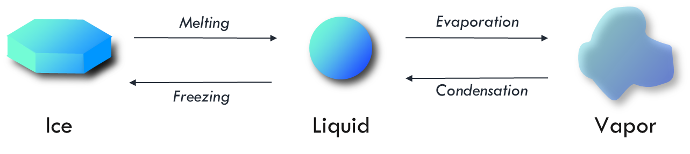
Latent heat
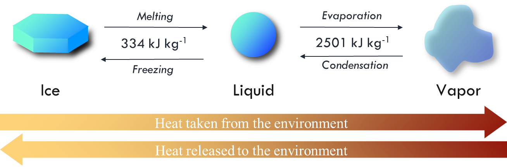
Latent Heat
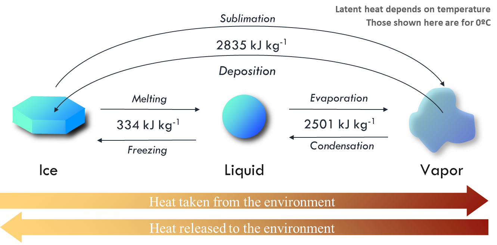
Latent Heat
Latent heat of vaporization
Conversion from latent to sensible heat in a storm cloud is equivalent to the energy released from a small nuclear bomb.
- Based on the amount of latent heat picked up at the surface through evaporation
- Released as water vapor condenses back into liquid water or freezes into ice.
Why spray liquid water on a tree?
Its seems counter-intuitive, but fine mist irrigation by sprinklers is used to reduce frost damage.
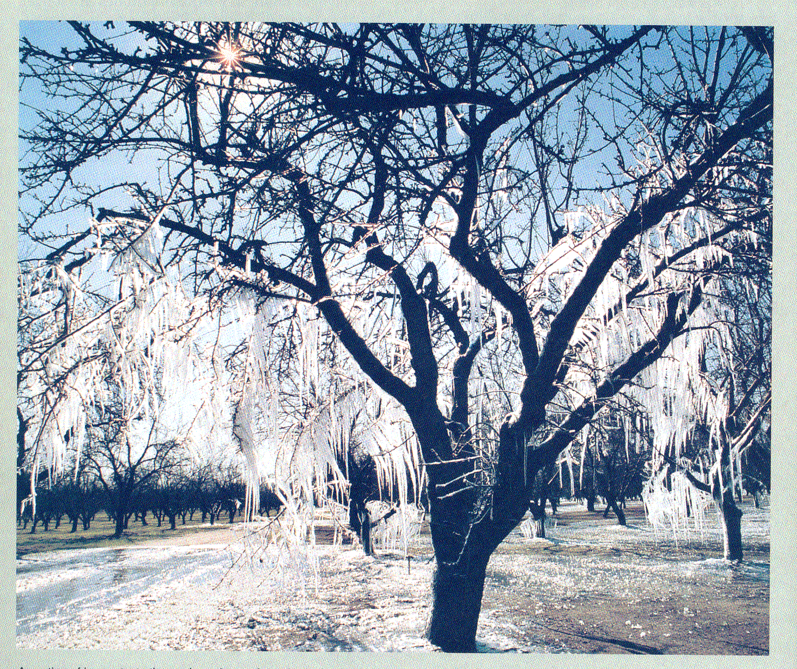
Why spray liquid water on a tree?
Latent heat of fusion:
- Sprayed liquid water releases latent heat of fusion as it becomes ice
- Prevents a damaging drop in temperature of almonds
Energy transfer in the atmosphere
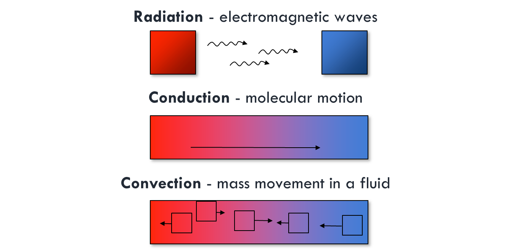Convection
There are free and forced types of convection. An example of the latter is air movement caused by a fan or the wind.

Fluxes and flux densities
Heat
- Heat = energy
- J
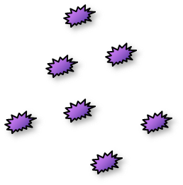
Heat Flux (Power)
Flow rate of energy
- W = J s-1
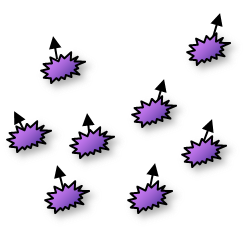
Heat Flux Density
Flow rate of energy per unit (surface) area
W m-2 = J s-1 m-2
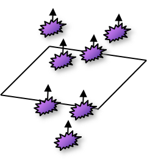
Fluxes and flux densities - direction
Flux densities can be positive or negative. The sign will depend on your reference point.
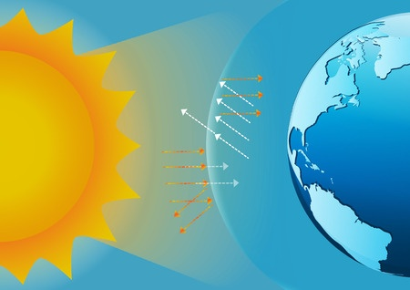
Can you think of an example?
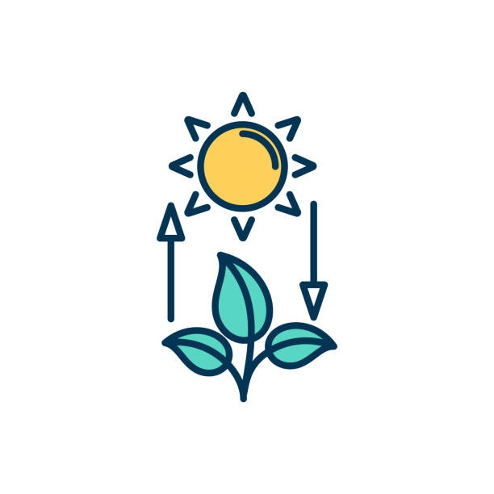
Net Flux Density
Sum of positive and negative fluxes
- Photosynthesis minus respiration in a leaf
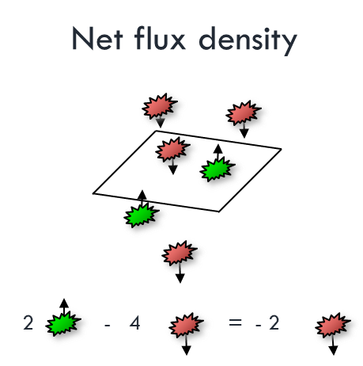
Net Flux Density
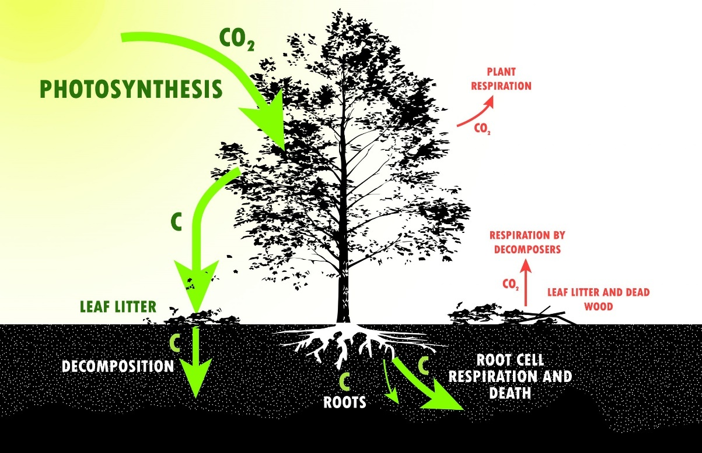Conservation of energy and mass
One of the most powerful laws used in analyzing organism-environment interaction is this Law of Conservation.
- Neither mass nor energy can be created or destroyed by any ordinary means.
- The application is similar to reconciling your checking account i.e. you can construct a budget or balance to account for all inflows and outflows of heat and mass.
Energy balance of a vegetated surface
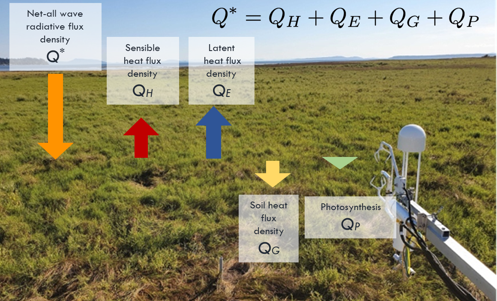Energy conservation
Energy is continually being converted from one form to another, but none is lost.
Energy conservation
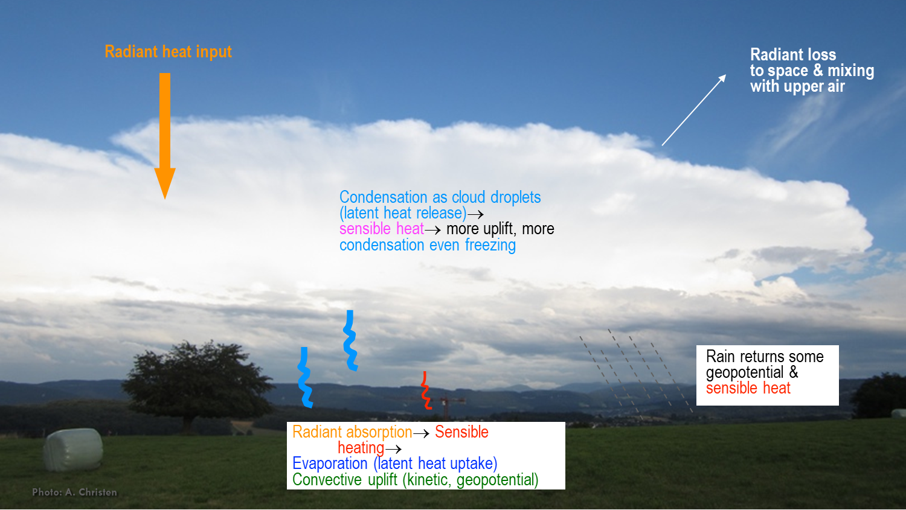Connectivity of energy and mass
Radiation budget
Net Radiation = Short-wave irradiance - Short-wave reflectance + Long-wave irradiance - Long-wave emittance and reflectance
Water balance
Precipitation = Evaporation + Water storage + Drainage + Runoff
Carbon balance
Net CO2 flux = Photosynthesis - Respiration
Energy Balance
Net radiation = Sensible heat + Latent heat + Soil heat + Photosynthesis
Summary
- Difference between flux and flux density
- Flux density is energy transport per unit area per unit time (W m-2)
- Energy and mass transfer mechanisms
- Radiation, conduction, and convection
- Understand the concept of energy and mass balances and their connectivity
- Neither mass nor energy can be created or destroyed by any ordinary means, just converted from one form to another.